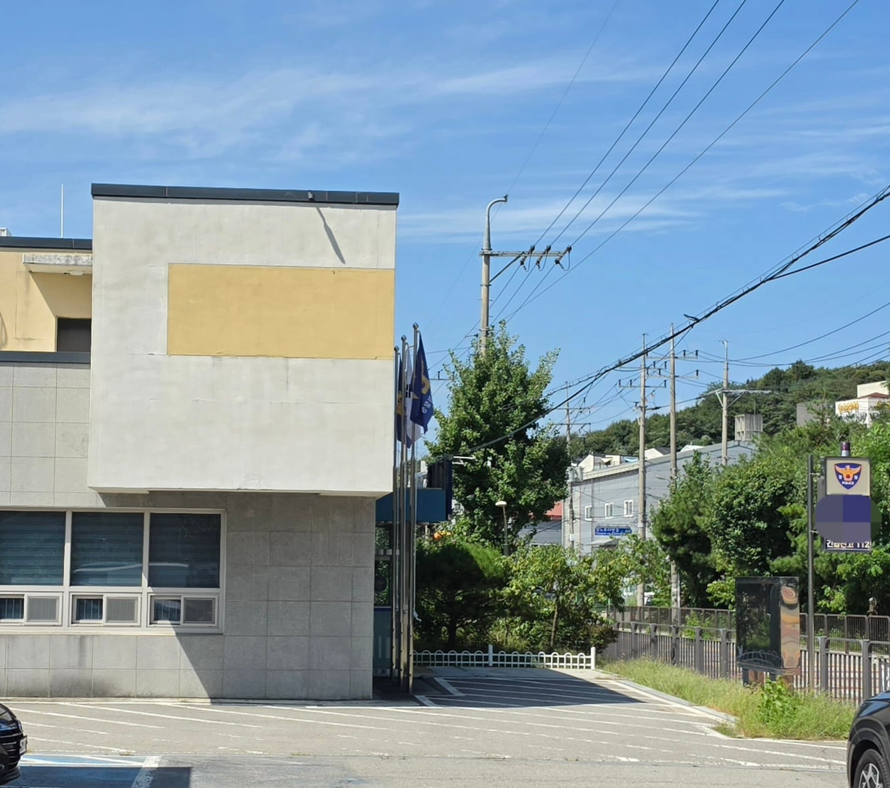
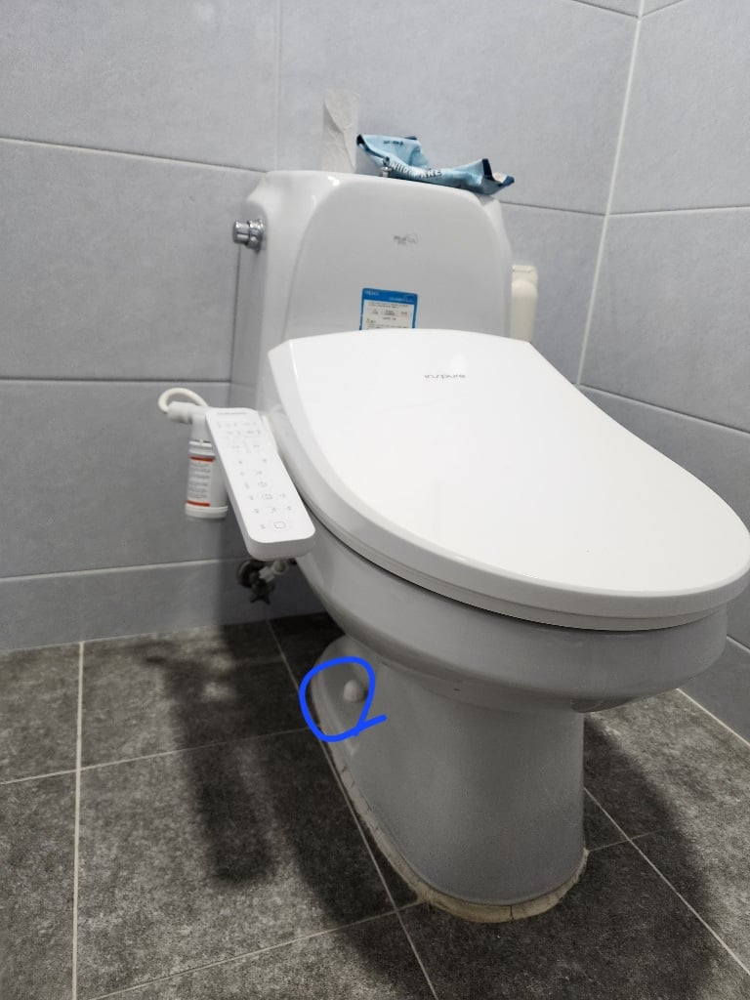
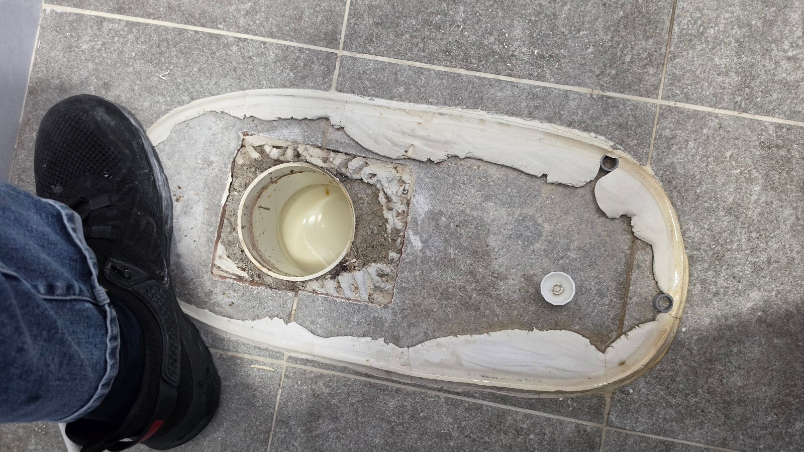
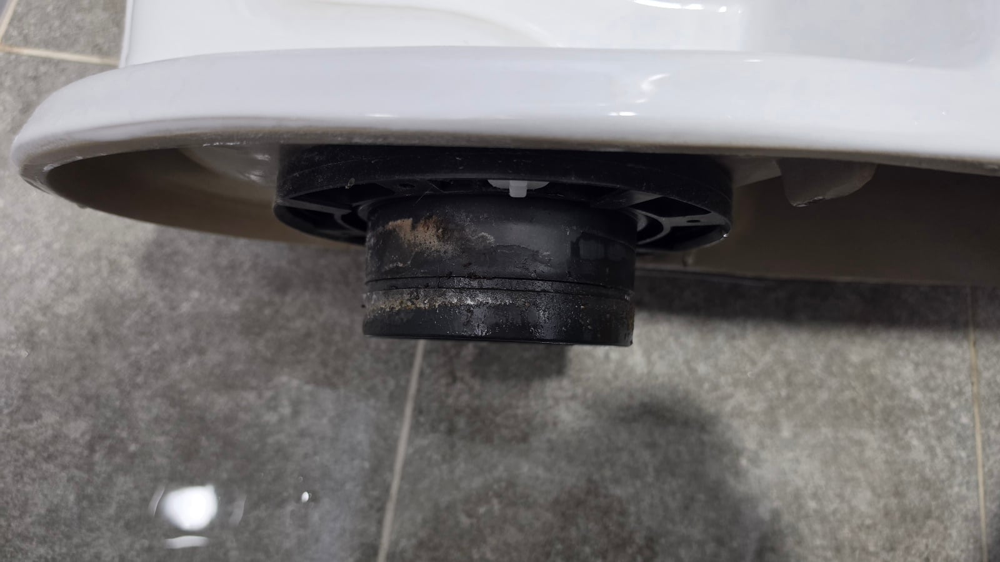
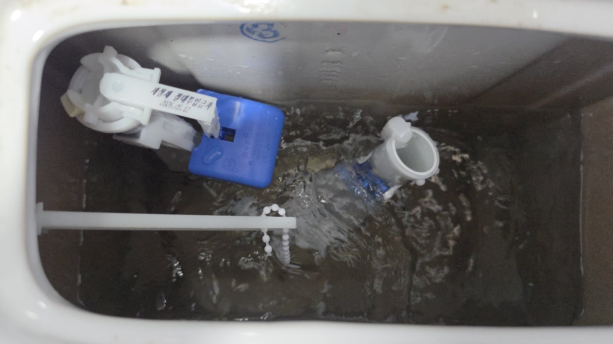
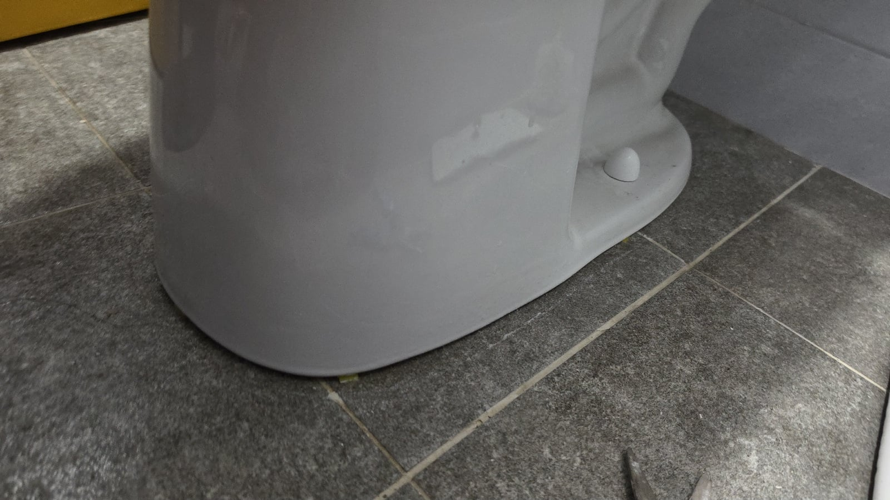
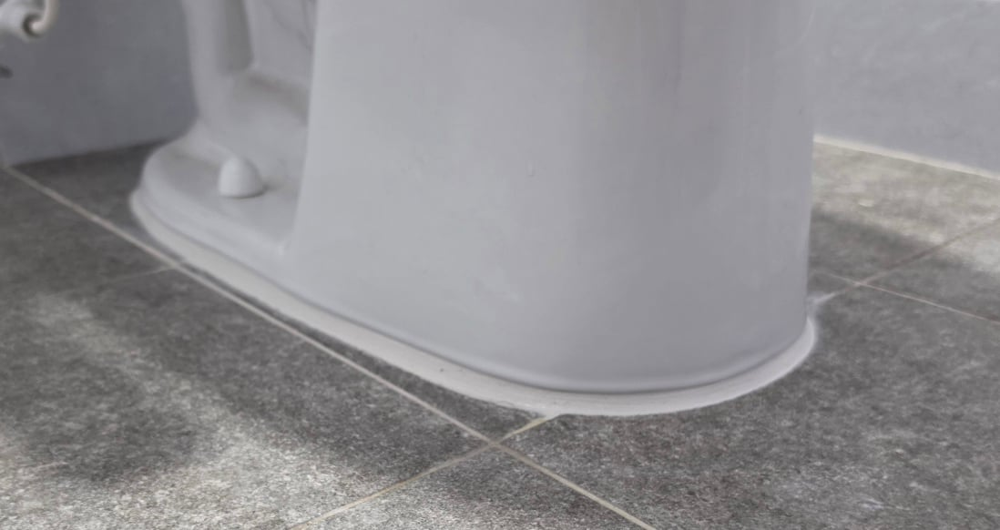
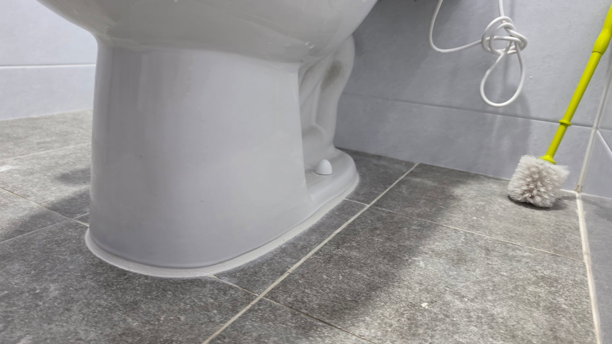
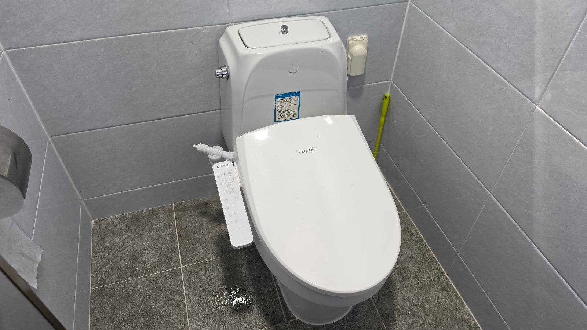

변기 막힌거 뚫으러 갔는데 들어간 물건 30초만에 꺼내니까 이렇게 쉬운걸 왜 5만원 이냐 받냐고 돈 못준다고 해서 다시 변기에 넣고 물 내려버렸더니 집주인이 경찰에 신고 해서 갔다 온건 아니고
파출소 변기 부속이 고장났는지 물이 빨리 안채워 진다고 수리 해 달라고 해서 갔음

물탱크 부속 고장난건 몇년썼으니까 새걸로 바꾸면 간단함
근데 밑에 시멘트 깨진게 상당히 거슬리는데 플랜지 볼트캡 보면 허접한 부속 쓴걸 알수있음
손으로 살짝 들어봤더니 덜컹덜컹 ㅋㅋ


시멘트 안깼는데 고대로 변기 들림 플랜지 고무가스킷 없음ㅋㅋ 햄부기집들하고 똑같은 상황

일단 부속 부터 새걸로 교체 완료하고 (유료)




플랜지 바꾸고 수평잡고 시멘트 마감함(무료)
재설치 하는 작업이 더 비싼작업이지만 예전에 우리창고 비데 도둑왔을때 잡아준 파출소라 그냥 해줬음
변기맨님 변기 물대릴때 림부분 맨앞쪽만 물이 안나와요 해결방법 있을까요 구멍?이 막힌건지 원래부터 이랬던건지 알수가 없네요